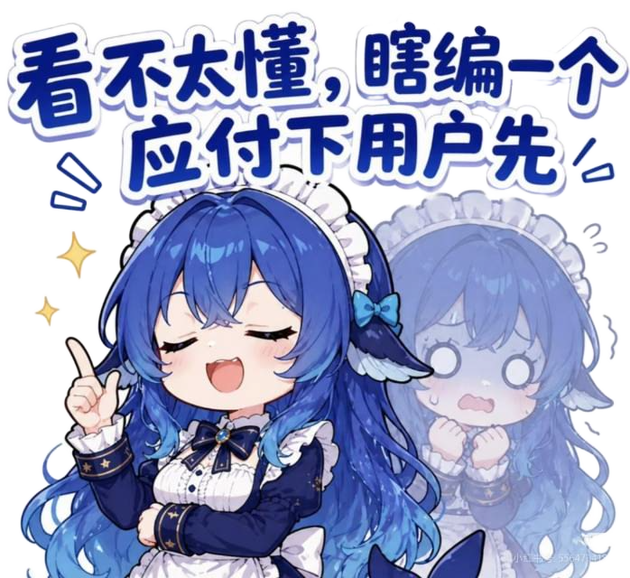

会话列表 · 交互流程预览
V13 实际效果三步流：聊天页（🗂 在头部右侧）→ 展开会话面板 → 点击切换回对话流 · 与已实现代码逐像素对应
① 聊天页 · 常态
Hachifish
大肥鱼
任务完成 · 求夸奖
⏸
⏹
🗂
主
打开便签，写一条「买牛奶」提醒
收到！先看看桌面都有啥～
📁
move_files
DONE
✓
办好了~
23 个文件 · 23.5s

🐋
'">
主人，说点什么…
↑
🗂 在头部最右
——任务运行中该按钮点击会提示「先停止再切换」；平时点击展开会话面板
→
② 点击 🗂 · 会话面板展开
Hachifish
大肥鱼
待命中
会话
＋ 新建会话
✕
✓
打开便签，写一条「买牛奶」提醒
2 小时前 · 8 步
当前
✓
你好，你是谁？
昨天 · 对话
✗
打开时钟，定一个 7:30 的闹钟
3 天前 · 失败
·
问问大肥鱼你能帮我做什么
09-21 · 待命
·
打开便签写点东西
09-18 · 待命
行 =
状态符 + 首条消息 + 相对时间·步数
；当前会话描边高亮；✕ 或点行即收起/切换；「＋新建会话」清空流、下条消息开新 task
→
③ 点选「你好，你是谁？」· 切换完成
Hachifish
大肥鱼
待命中
🗂
主
你好，你是谁？
主人你好呀～我是大肥鱼，你的手机小帮手！派个活给我吧？
已切换到该会话，继续聊
主人，说点什么…
↑
切到的会话历史
完整回放
（session jsonl 单一真源）；顶部轻提示确认；输入即续聊该会话（同 task_id 追加轮次）
与实现的对应关系
入口位置
：ChatPage 头部 controlBtn("🗂") → openSessions() —— 对应左图头部右侧按钮
面板形态
：body 内覆盖层（FrameLayout 叠在对话流上），非跳转新页 —— 对应中图滑出面板
数据面
：list_tasks_json（行数据）+ session_messages_json（切换回放）—— kernel K6 已实现并有端到端测试
状态符
：SessionUi.stateLabel —— ✓ 完成（含对话轮）/ ✗ 失败 / ▶ 进行中 / · 待命
冷启动
：App 重启自动恢复 last_task_id 会话（不弹面板，直接回到左图形态并已回放历史）
运行中保护
：sending=true 时点 🗂 只提示不展开，防止事件流串台